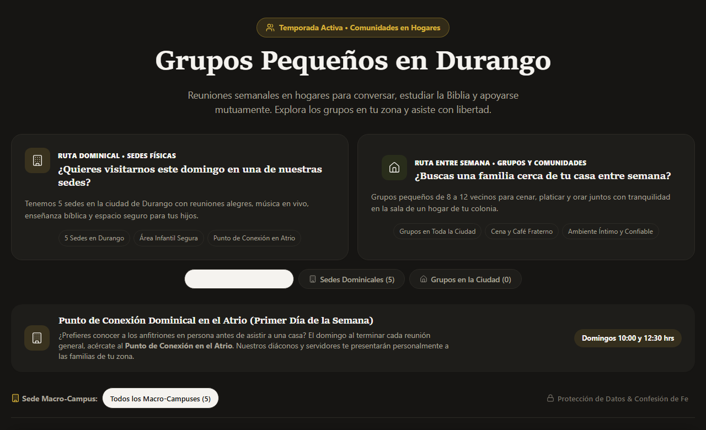

Carta Pastoral y Fraternal
Cuidado pastoral genuino en hogares, sin la saturación de WhatsApp ni cobros por miembro.
Pórtico OS nació en Durango, México, en una mesa de trabajo junto a pastores y familias que abrían su sala cada semana. No es un producto comercial ni una plataforma de Silicon Valley; es un taller de software libre y sobrio al servicio de las iglesias locales. La comunidad Amor y Gracia en Durango es nuestro hogar fundacional y testimonio vivo.
Tres realidades de la vida real que resolvemos juntos
1. Coordinación familiar sin saturar WhatsApp
Saber quién asiste a cenar, quién llega con café o pan dulce y en qué hogar nos reunimos. Todo con una confirmación clara y serena de un solo toque, sin perder mensajes esenciales entre cadenas de oración, stickers o avisos vecinales.
2. Cuidado y descanso para la familia anfitriona
Abrir la sala de una casa semana a semana requiere amor y esfuerzo. Pórtico rota los hogares y visibiliza los descansos con ternura pastoral para que ningún anfitrión termine abrumado ni agotado en silencio.
3. Tu iglesia es la única dueña de sus datos
Sin suscripciones mensuales abusivas, sin cobro por cada miembro que asiste y sin comercializar la información íntima de las familias. La base de datos vive con tu congregación y la descargas completa en un clic cuando lo desees.
Nuestra comunidad fundacional en Durango
Iglesia Amor y Gracia • Cuidado pastoral del Pastor Josh
En Amor y Gracia organizamos nuestras reuniones en hogares por toda la ciudad de Durango con esta misma plataforma. Puedes entrar a explorar la experiencia pública tal como la viven nuestros vecinos:

Nota de cortesía: Este portal enlaza a una instancia comunitaria real servida desde nuestro host local protegido en Durango. Si en este instante se encuentra en ventana de mantenimiento o descanso de equipo, puedes apreciar la vista previa interactiva arriba o escribirnos directamente para mostrarte el sistema en funcionamiento.
Conversemos con calma de pastor a pastor
Si sirves en una congregación o red de células que busca acompañar a sus familias con orden y dignidad, con gusto te compartimos nuestra experiencia y te ayudamos a ponerlo en marcha.